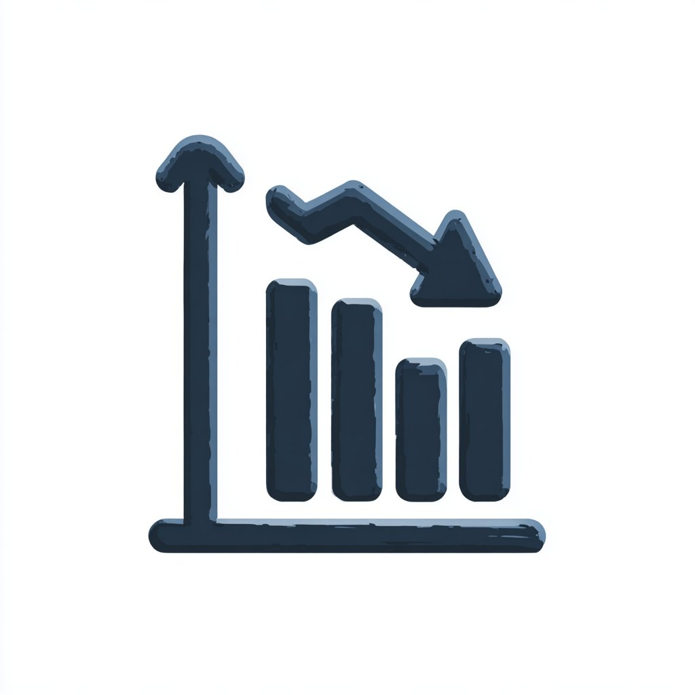
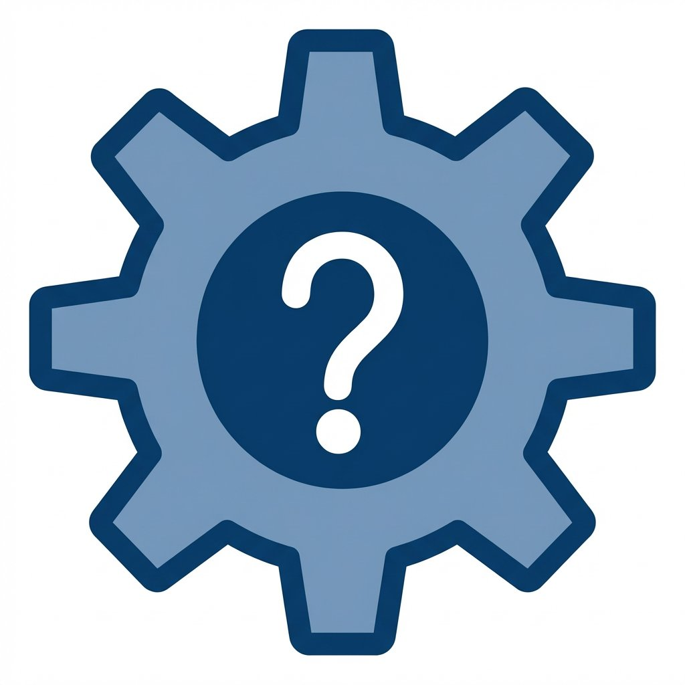
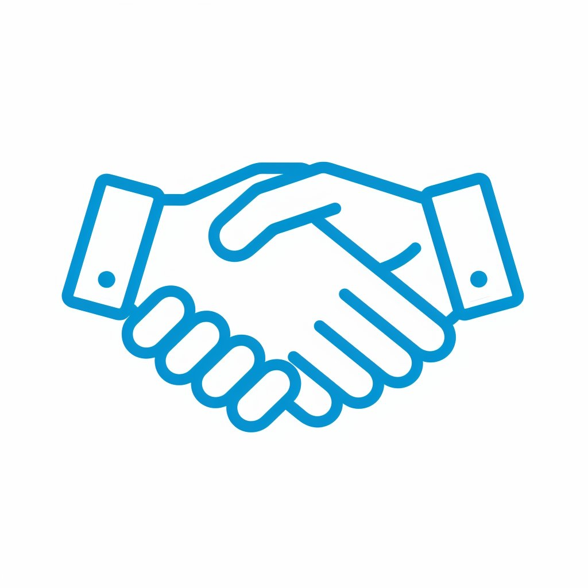
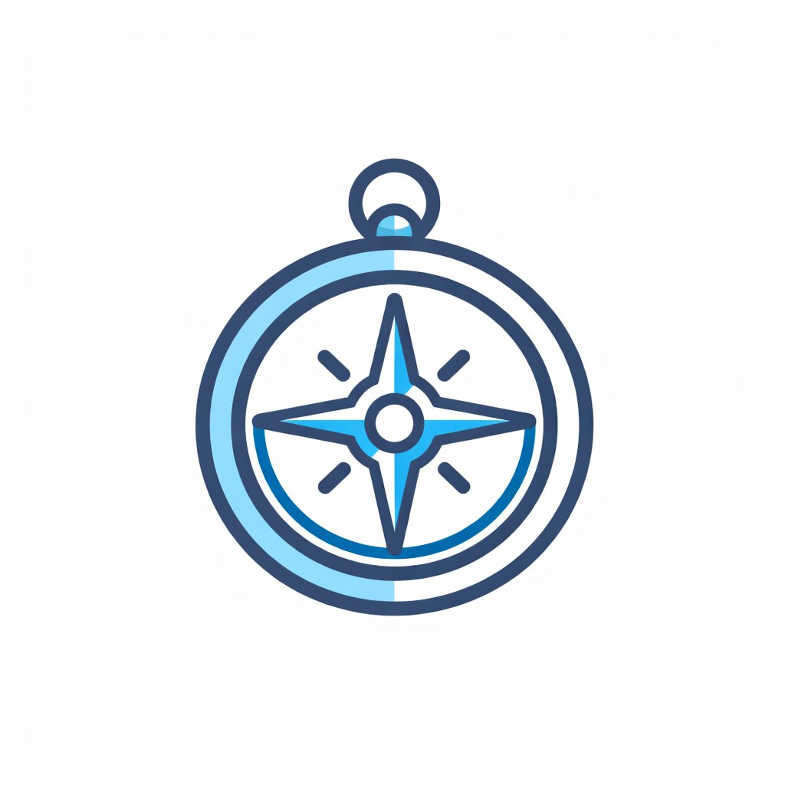

発信を"仕組み"に変える３つの設計

土台から整えることで、
発信は"なんとなく"から"戦略"に変わります。
こんなお悩みありませんか？
何を発信すれば
いいのか分からない

SNSやWEBを作っても
反応がない

集客につながる発信の
方法が分からない
発信を"仕組み"に変える３つの設計
土台から整えることで、
発信は"なんとなく"から"戦略"に変わります。
「とりあえず投稿する」「とりあえず作る」
そんな発信から抜け出したい企業さまへ。
強みや想いを整理し、
届けたい相手と目的を明確にすることで、
成果につながる発信の"土台"を一緒につくります。
制作だけを行うのではなく、
企業のパートナーとして伴走しながら、
発信を"仕組み"へと育てていきます。
単発の制作ではなく、
事業の成長に貢献する発信設計を支援しています。
サポート内容
① 魅力の整理
強み・特徴・想いを整理し、誰に・何を・どう届けるかを明確にします。発信の軸を定める工程です。
② SNS運用
方向性に沿った投稿設計を行い、目的につながる導線をつくります。"なんとなく投稿"から脱却します。
③ 動画制作
感覚的な動画ではなく、届けたい相手を意識した構成で興味・信頼につなげます。
yuyuの強み


発信や制作は、事業の成長につなげるための手段だと考えています。
そのため、デザインや投稿を行う前に、誰に・何を・どう届けるかを設計します。
制作して終わりではなく、
運用までを見据えた導線設計を行い、成果につながる仕組みへと育てていきます。
作る人ではなく、事業のパートナーとして伴走します。
単発の制作ではなく、
事業の成長に貢献する発信設計を支援しています。
制作の流れ
まずは事業内容や課題、目標を丁寧にヒアリングします。
「何を作るか」ではなく「何を目指すか」から整理します。
誰に・何を・どう届けるのかを明確にし、
成果につながる導線を設計します。
設計内容に基づき、WEB・SNS・動画などを制作します。
公開後も必要に応じて改善・運用を行い、
継続的に成果につながる状態を目指します。
方向性が決まっていない段階からでもご相談いただけます。
方向性がまだ固まっていない段階でも問題ありません。
何を発信すればよいか分からない状態からでも、
目的や状況を丁寧にお伺いし、
集客につながる最適な形を一緒に整理します。
パートナーとして寄り添いながら、
継続的に成果につながる発信をサポートします。